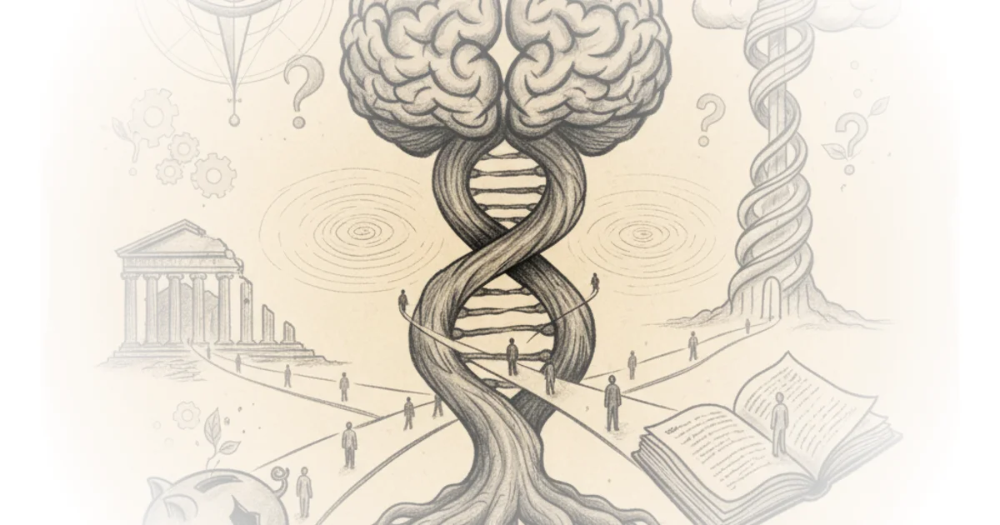

Steve Bannon protests pt.2 Alex O'Connor · Cosmic Skeptic ·Nov 16, 2018 · 13 min read · Political Strategy
Oxford University protests Steve Bannon Alex O'Connor · Cosmic Skeptic ·Nov 16, 2018 · 10 min read · Political Strategy
Live: I’m back! Q and A to catch up Alex O'Connor · Cosmic Skeptic ·Jun 21, 2018 · 75 min read · Philosophy
George Condo: The Way I Think Louisiana Channel · The Louisiana Channel ·Nov 7, 2017 · 26 min read · Culture
Livestream: Cosmic Skeptic 100,000 Subscriber Q&A Alex O'Connor · Cosmic Skeptic ·May 12, 2017 · 45 min read · Philosophy
Uses of Philosophy for Living: The Well Formed Mind Wes Cecil · Wes Cecil ·Sep 19, 2016 · 47 min read · Philosophy 
“I never decided to become an architect.” Louisiana Channel · The Louisiana Channel ·Nov 30, 2015 · 39 min read · Housing & Cities
Norman Foster: Striving for Simplicity Louisiana Channel · The Louisiana Channel ·Jun 1, 2015 · 23 min read · Culture
Languages and Literatures: Cuneiform Civilizations Wes Cecil · Wes Cecil ·Oct 4, 2012 · 48 min read · Philosophy
Simone de Beauvoir Her Life and Philosophy Wes Cecil · Wes Cecil ·Sep 1, 2012 · 48 min read · Philosophy
Jean-Paul Sartre His Life and Philosophy Wes Cecil · Wes Cecil ·Sep 1, 2012 · 50 min read · Philosophy